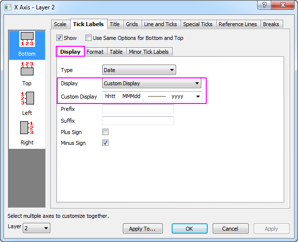

Kursdiagramme OHLC-Volumen
OHLCV-Stock-Chart
Zusammenfassung
Dieses Tutorial zeigt Ihnen, wie Sie ein Kursdiagramm erstellen, um Eröffnungs-, Höchst-, Tiefst- und Schlusskurse zusammen mit dem Handelsvolumen anzuzeigen.

Origin-Version mind. erforderlich: Origin 2016 SR0
Was Sie lernen werden
- Kursdiagramm mit Eröffnungs-, Höchst-, Tiefst- und Schlusskursen und Handelsvolumen erstellen
- Achsenskalierungstyp festlegen, so dass handelsfreie Tage übersprungen werden
- Format für Hilfsstrichsbeschriftungen festlegen (Mehrzeilige Beschriftung)
- Volumenspalten gemäß ihres Wochentages mit verschiedenen Füllfarben kategorisieren
- Legende erstellen, um die Spalten mit verschiedenen Füllfarben zu versehen
Schritte
Sie können dieses Diagramm auch im Origin-Navigator finden. (Wählen Sie Hilfe: Origin-Navigator im Menü oder drücken Sie die Taste F11. Öffnen Sie dann Diagrammbeispiel: Financial Plots.)
- Markieren Sie die Spalten Col(C)~Col(G) im Arbeitsblatt und wählen Sie dann im Menü Zeichnen: Spezialisiert: OHLC-Volumen, um ein Diagramm zu erstellen.
- Klicken Sie doppelt auf die untere X-Achse von Layer2, um den Dialog X-Achse zu öffnen. Gehen Sie zur Registerkarte Skalierung. Sie können sehen, dass der Typ standardmäßig auf Diskret gesetzt ist. Darum überspringt die X-Achse automatisch alle Wochenenden und Feiertage.
-
- Ändern Sie den Achsenbereich von 03.03.2001 bis 07.05.2001. Stellen Sie unter Große Hilfsstriche sicher, dass Typ auf Nach Inkrement gesetzt ist. Geben Sie 1week für den Wert ein. Stellen Sie unter Kleine Hilfsstriche sicher, dass Typ auf Nach Anzahlen gesetzt ist. Geben Sie 5 für Anzahl ein. Klicken Sie auf die Schaltfläche Anwenden. Sie können erkennen, dass Wochenenden und Feiertage übersprungen werden.
- Um die untere Achsenbeschriftung in mehreren Zeilen anzuzeigen, wechseln Sie zur Registerkarte Beschriftung der Hilfsstriche. Aktivieren Sie die Unterregisterkarte Anzeige. Wählen Sie Benutzerdefinierte Anzeige in der Auswahlliste Anzeige. Geben Sie den Text unten im Textfeld Benutzerdefinierte Anzeige ein.
hhtt MMMdd --------- yyyy

Gehen Sie zur Unterregisterkarte Format, setzen Sie die Schriftgröße 10 und aktivieren Sie das Kontrollkästchen Textumbruch.
Klicken Sie auf die Schaltfläche Anwenden.
- Gehen Sie zurück zur Registerkarte Skalierung, wählen Sie das Symbol Vertikal im linken Bedienfeld und setzen Sie dann die Werte für Von und Bis auf 0 und 120M. Klicken Sie auf die Schaltfläche Anwenden.
- Wählen Sie 1 in der Auswahlliste Layer, die sich unten links im Dialog befindet, um zu Layer 1 zu wechseln. Setzen Sie dann bei noch immer ausgewähltem Symbol Vertikal die Werte Von und Bis auf 12 und 22. Klicken Sie auf OK, um den Dialog zu schließen.
- Klicken Sie zum Öffnen des Dialogs Details Zeichnung doppelt auf das Säulendiagramm bei Layer 2. Erweitern Sie auf der Registerkarte Muster die Auswahlliste Füllfarbe und gehen Sie zur Unterregisterkarte Nach Punkten in der Liste Index. Wählen Sie Col(B): "Week Day" und dann D01 Pumpkin Patch in der Farbliste. Klicken Sie auf OK, um das Dialogfeld zu schließen.
- Wählen Sie bei aktiviertem Layer 2 im Menü Grafik: Legende: Kategoriale Werte. Übernehmen Sie im geöffneten Dialog die Standardeinstellungen und klicken Sie auf OK. Es wird eine Legende zum Diagramm hinzugefügt. Markieren Sie die Legende, um den Legendenrahmen zu zeigen, drücken Sie die Strg-Taste und ziehen Sie an dem Rahmen, so dass die Legendenelemente in einer Zeile angeordnet werden können.
- Passen Sie Größe und Position des Legendenfelds nach Bedarf an. Das Diagramm sollte am Ende folgendermaßen aussehen.
-